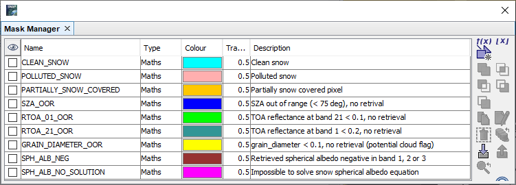
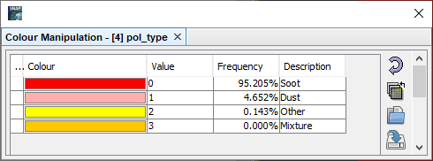

| SNAP Data Processors - SICE2 Snow Retrieval Processor Description (standard mode) |
|
Name: Used to select the OLCI L1b source product. Use the ... button to open a data product currently not opened in the Sentinel Toolbox.
Name: Used to specify the name of the target product.
Save to: Used to specify whether the target product should be saved to the file system. The combo box presents a list of file formats.
Open in SNAP: Used to specify whether the target product should be opened in the Sentinel Toolbox. When the target product is not saved, it is opened in the Sentinel Toolbox automatically.
Write spectral albedos:
If selected, all spectral albedos (spherical and planar, 21 bands each) as well as BRR will be written to the
target product. The default is 'false'.
| Band name | Meaning | Unit |
|---|---|---|
| grain_diameter | Snow grain diameter | mm |
| snow_specific_area | Snow-specific surface area | m^{2}kg^{-1} |
| al | effective absorption length | mm |
| r0 | reflectance of a semi-infinite non-absorbing snow layer | |
| isnow | Snow flag (see table below) | |
| pol_type | type of pollutant (see table below) | |
| albedo_bb_planar_sw | shortwave broadband planar albedo | 300-2400 nm |
| albedo_bb_spherical_sw | shortwave broadband spherical albedo | 300-2400 nm |
| factor | Snow covered fraction within mixed pixels | |
| O3_SICE | total ozone (OLCI) corrected for ozone scattering | kgm^{-2} |
| cv1 | quality check 1 (see ATBD) | |
| cv2 | quality check 2 (see ATBD) | |
| impurity_load | pollutant load | ppm_weight |
| albedo_spectral_spherical_nn (nn=01,..,11,16,..,21), optional | spectral spherical albedo (OLCI bands 1 to 11 and 16 to 21) | |
| albedo_spectral_planar_nn (nn=01,..,11,16,..,21), optional | spectral planar albedo (OLCI bands 1 to 11 and 16 to 21) | |
| rBRR_nn (nn=01,..,21), optional | bottom of the atmosphere surface reflectance (OLCI bands 1 through 21) |
| Flag name | Flag value | Description |
|---|---|---|
| CLEAN_SNOW | 1 | Clean snow |
| POLLUTED_SNOW | 2 | Polluted snow |
| PARTLY_SNOW_COVERED | 4 | Partly snow covered pixel |
| SZA_OOR | 8 | SZA out of range (< 75 deg), no retrival |
| RTOA_01_OOR | 16 | TOA reflectance at band 1 < 0.1, no retrieval |
| RTOA_21_OOR | 32 | TOA reflectance at band 21 < 0.2, no retrieval |
| GRAIN_DIAMETER_OOR | 64 | grain_diameter < 0.1, no retrieval (potential cloud flag) |
| SPH_ALB_NEG | 128 | Retrieved spherical albedo negative in band 1, 2 or 3 |
| SPH_ALB_NO_SOLUTION | 256 | Impossible to solve snow spherical albedo equation |

| Name | Index value | Description |
|---|---|---|
| SOOT | 0 | Soot |
| DUST | 1 | Dust |
| OTHER | 2 | Other |
| MIXTURE | 3 | Mixture |
